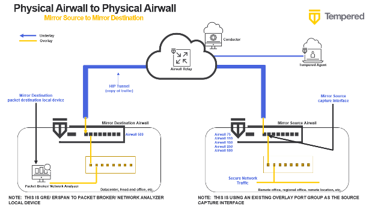

Mirror Traffic to a Local Device destination (Recommended Way)
The recommended way to mirror traffic is to send the traffic to a local device for your packet analyzer.
To mirror traffic to a local device, you need to:
- Create a local device for your packet analyzer tool.
- Configure a Mirror Destination to send to a Local Device.
- Configure Airwall Gateways to act as Mirror Sources.
- Adjust performance for mirrored traffic.
- Set up security for mirrored traffic.
- Configure your packet analyzer tool.
These steps are described in more detail in the following sections.
Here is a diagram showing this scenario:
